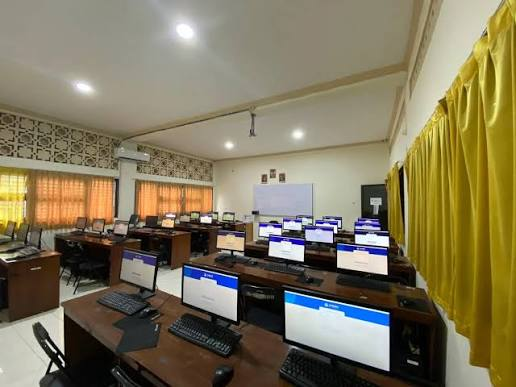

Teknik Informatika
Membangun generasi inovatif di bidang teknologi
informasi yang unggul, berkarakter.

01
PROFIL PROGRAM STUDI
Mencetak Lulusan Unggul, Inovatif & Berakhlak Mulia di Bidang Informatika
Program Studi S1 Teknik Informatika Universitas Muhammadiyah Cirebon berkomitmen menyelenggarakan pendidikan berkualitas berstandar industri dengan mengintegrasikan nilai-nilai keislaman dan kewirausahaan digital.
Kurikulum Berbasis Industri
Tenaga Pengajar Profesional

S1
Teknik Informatika
1.200+
Mahasiswa Aktif
35+
Dosen Pengajar
Aktif
Status Prodi
Baik Sekali
Akreditasi BAN-PT